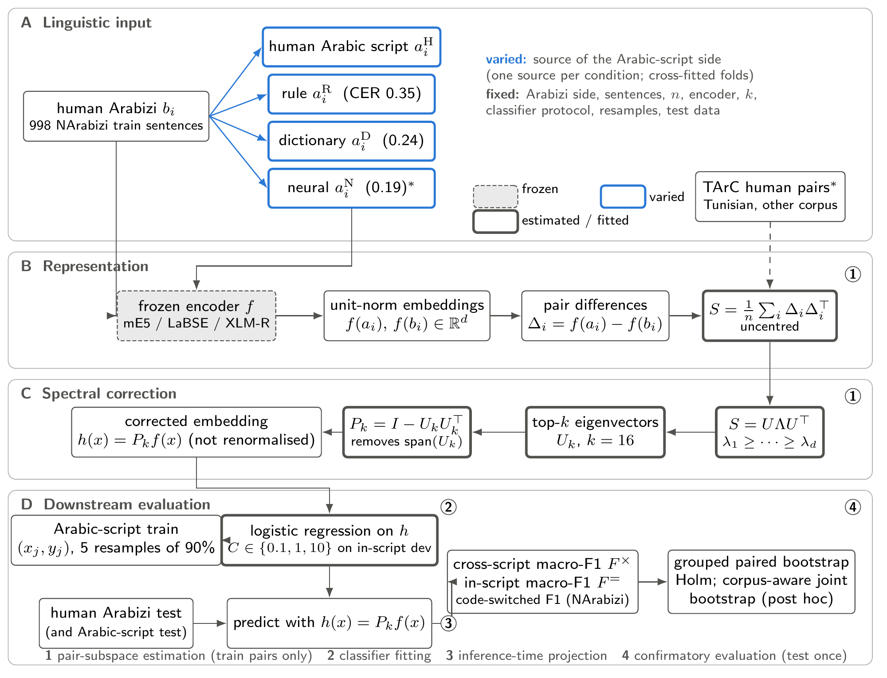
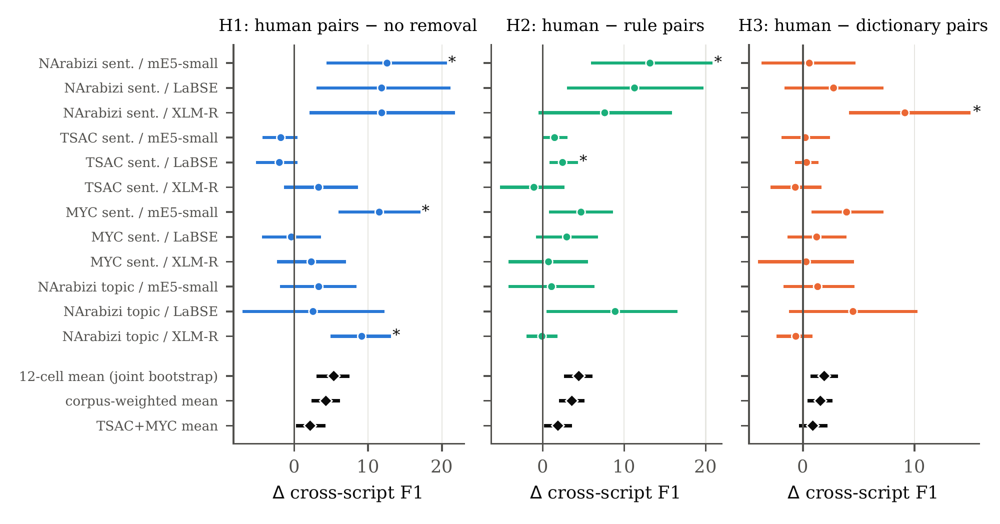

FORMAL · 2026
Pair Provenance-Aware Spectral Subspace Analysis for Cross-Script Transfer: A Maghrebi Arabic–Arabizi Case Study
SubmittedManuscript submitted to an international journal; under review.
Multilingual sentence encoders place Arabic-script and Latin-script (Arabizi) renderings of Maghrebi Arabic in partly separate regions, so classifiers trained on Arabic script lose 7.2 to 24.2 macro-F1 points on Arabizi. The study keeps a lightweight spectral correction fixed and varies where its training pairs come from: human Arabic-script renderings of 998 Algerian Arabizi sentences, or rule-based and dictionary transliterations of the same sentences. Pair provenance decides which script directions are removed, while corpus match limits what their removal can transfer.
Code: MIT licence. Archived predictions, statistics, tables, figures and protocols: CC BY 4.0. No corpus text is distributed; no DOI yet.
Preprint
Pair Provenance-Aware Spectral Subspace Analysis for Cross-Script Transfer: A Maghrebi Arabic–Arabizi Case Study
SubmittedManuscript submitted to an international journal; under review.
Preprint, submitted version, not peer-reviewed.
Preprint, submitted version, not peer-reviewed.
Overview
Problem
Multilingual sentence encoders place Arabic-script and Latin-script (Arabizi) renderings of Maghrebi Arabic in partly separate regions, so classifiers trained on Arabic script lose accuracy on Arabizi. A lightweight correction removes the leading eigenvectors of paired embedding differences, but the effect of the origin of the pairs had not been examined.
Approach
The projection Pk = I − UkUk⊤ (k = 16) removes the top eigenvectors of the scatter of paired embedding differences. The operator, the Arabizi side of the pairs, the encoder, the classifier protocol and the test data are fixed; only the source of the Arabic-script side changes: human renderings, rule-based or dictionary transliterations. Exploratory controls add neural transliterations and Tunisian pairs (TArC).

Evaluation protocol
- Encoders
- Three frozen encoders with pinned revisions: multilingual-E5-small, LaBSE and XLM-R base.
- Tasks
- Four classification tasks: NArabizi sentiment (two classes) and topic (five classes) for Algerian; TSAC sentiment for Tunisian; MYC sentiment for Moroccan.
- Pairs
- 998 NArabizi training sentences (Algerian Arabizi) with human, rule-based or dictionary Arabic-script renderings.
- Classifier
- Logistic regression; regularisation selected on in-script development macro-F1; five 90% training resamples.
- Pre-registration
- Confirmatory hypotheses H1–H3 pre-registered, with SHA-256 records of the protocol and of the code.
- Test set
- Single test evaluation. Grouped paired bootstrap (2,000 draws), Holm correction over the 12 cells; the 12-cell mean is the confirmatory estimand. Controls specified after the test run are labelled exploratory.
Main results
| Confirmatory hypothesis (test, 12-cell mean of cross-script macro-F1 differences) | Δ [95% CI] | Verdict |
|---|---|---|
| H1 human pairs > no removal | +5.35 [+3.50, +7.31] | confirmed |
| H2 human pairs > rule-transliteration pairs | +4.43 [+2.73, +6.01] | confirmed |
| H3 human pairs > dictionary-transliteration pairs | +1.91 [+0.77, +2.96] | confirmed |
- A corpus-aware re-analysis places most of the gain in the corpus that supplied the pairs.
- Lower transliteration error moves synthetic subspaces towards the human subspace without improving transfer.
- Transliterating the input with a dictionary or neural transliterator matches or exceeds every projection.

Source: abstract of the manuscript and archived results of the repository (README, Main findings).
Role and collaborations
Author of the manuscript and of the research code. Collaborations:
- Ehtesham HashmiDepartment of Information Security and Communication Technology (IIK), NTNU, Norway
- Salah ZriguiInria, Université Grenoble Alpes, France
- Henri NicolasLaBRI, University of Bordeaux, France
- Mounir ZriguiRLANTIS, University of Monastir, Tunisia
Cite this work
@unpublished{jaballi2026formal,
author = {Jaballi, Samawel and others},
title = {Pair Provenance-Aware Spectral Subspace Analysis for Cross-Script Transfer: A Maghrebi Arabic--Arabizi Case Study},
year = {2026},
url = {https://samaweljaballi.github.io/research/pdf/formal-manuscript.pdf},
note = {Submitted}
}